Mazda 6 Kombi 2.5 SkyPassion | 2017 | 1. właściciel | Polski salon Cena: 49 000 zł Rok produkcji: 2017 Silnik: 2.5 benzyna (SKYACTIV-G), automatyczna skrzynia biegów Nadwozie: kombi Przebieg: 262 000 km Pochodzenie: salon Polska, I właściciel (od nowości w jednych rękach) VIN: JMZGL693801528584 Na sprzedaż oferuję zadbaną Mazdę 6 kombi w najbogatszej wersji wyposażenia SkyPassion. Samochód pochodzi z polskiego salonu i od początku użytkowany był przez jednego właściciela. Auto jest utrzymane w bardzo dobrym stanie technicznym oraz wizualnym. Serwis i eksploatacja:Regularny serwis olejowy: pierwsza wymiana oleju po 5 000 km, kolejne co 15 000 km. Regularnie wymieniany oleju w automatycznej skrzyni biegów. Pełna dokumentacja serwisowa do wglądu – na życzenie mogę przedstawić historię w ASO Mazda Voyager Poznań. Dwa komplety kół: na zdjęciach auto prezentowane jest na kołach zimowych; do samochodu dokładam również oryginalne felgi aluminiowe 19" z oponami letnimi. Najważniejsze elementy wyposażenia (SkyPassion): -Jasna skórzana tapicerka (białe skóry) -Elektrycznie sterowany szyberdach -System nagłośnienia BOSE z 11 głośnikami -Kolorowy wyświetlacz Head-Up (HUD) na szybie (z rozpoznawaniem znaków drogowych) -Adaptacyjne reflektory przednie LED (ALH) z doświetlaniem zakrętów i automatycznym sterowaniem światłami drogowymi -Fotele przednie podgrzewane oraz elektrycznie regulowane z pamięcią ustawień + podgrzewane fotele tylne -Kamera cofania oraz czujniki parkowania przód i tył -System bezkluczykowy (Keyless) (otwieranie, zamykanie i uruchamianie silnika bez użycia kluczyka) -System odzyskiwania energii i-ELOOP (charakterystyczny dla wersji 2.5 SkyPassion) Pełne wyposażenie wersji SkyPassion Multimedia i łączność: system multimedialny MZD Connect z kolorowym ekranem i sterowaniem pokrętłem HMI, nawigacja, radio CD/MP3/DAB/Bluetooth, złącza USB/AUX, komputer pokładowy z kolorowym wyświetlaczem między zegarami. Komfort i wnętrze: dwustrefowa klimatyzacja automatyczna, skórzana kierownica wielofunkcyjna z łopatkami zmiany biegów, podgrzewana kierownica, elektrochromatyczne lusterko wsteczne, elektrycznie sterowane szyby przednie i tylne, przyciemniane szyby tylne, podłokietniki przód/tył, składana tylna kanapa (system Karakuri) z uchwytami w bagażniku. Nadwozie i oświetlenie: felgi aluminiowe 19" (w zestawie letnim), światła do jazdy dziennej LED, światła tylne LED, przednie światła przeciwmgielne LED, elektrycznie regulowane, podgrzewane i składane lusterka boczne (często z funkcją pamięci/automatycznego pochylania przy cofaniu), relingi dachowe (w nadwoziu kombi). Bezpieczeństwo i systemy wspomagania: poduszki powietrzne czołowe, boczne i kurtynowe, ABS, EBD, system dynamicznej kontroli stabilności toru jazdy (DSC) i kontroli trakcji (TCS), system wspomagania ruszania pod górę (HLA), system monitorowania martwego pola (BSM/RVM), system ostrzegający o ruchu poprzecznym z tyłu (RCTA), system wspomagania hamowania (SCBS) / zaawansowane systemy bezpieczeństwa i-ACTIVSENSE, asystent utrzymania pasa ruchu (LKA/LDW), czujnik zmierzchu i czujnik deszczu, system monitorowania ciśnienia w oponach (TPMS), immobilizer oraz autoalarm. Auto pewne, z udokumentowaną historią, bezawaryjnym wolnossącym silnikiem 2.5 i bogatym wyposażeniem. Na życzenie mogę podesłać więcej zdjęć oraz historie serwisową. Zapraszam do kontaktu oraz na oględziny.
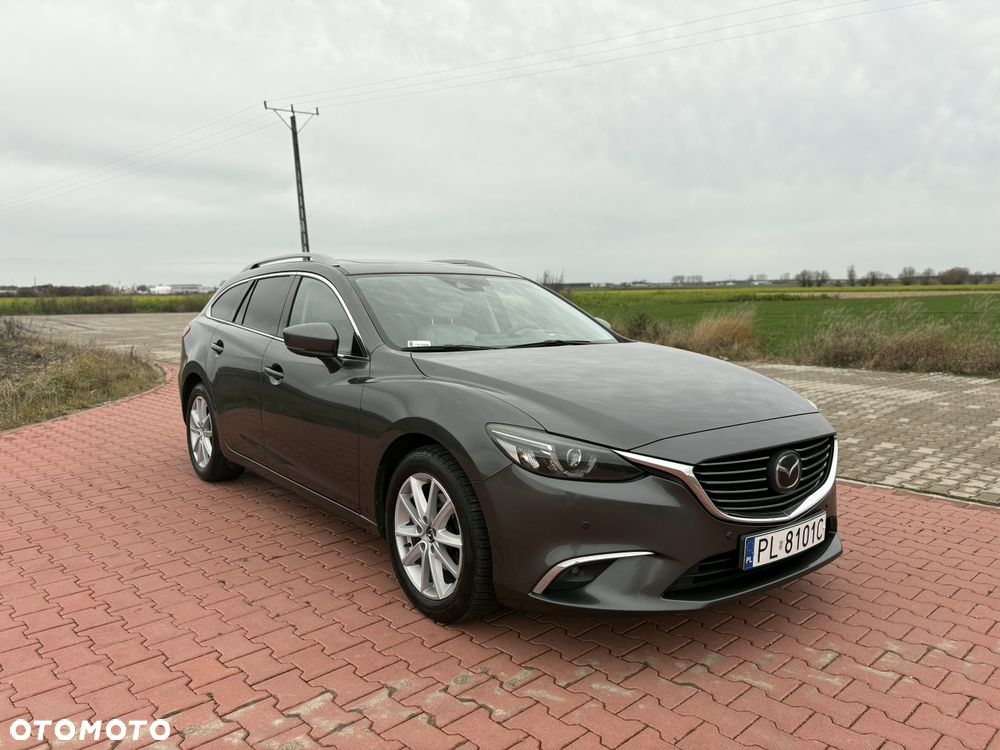
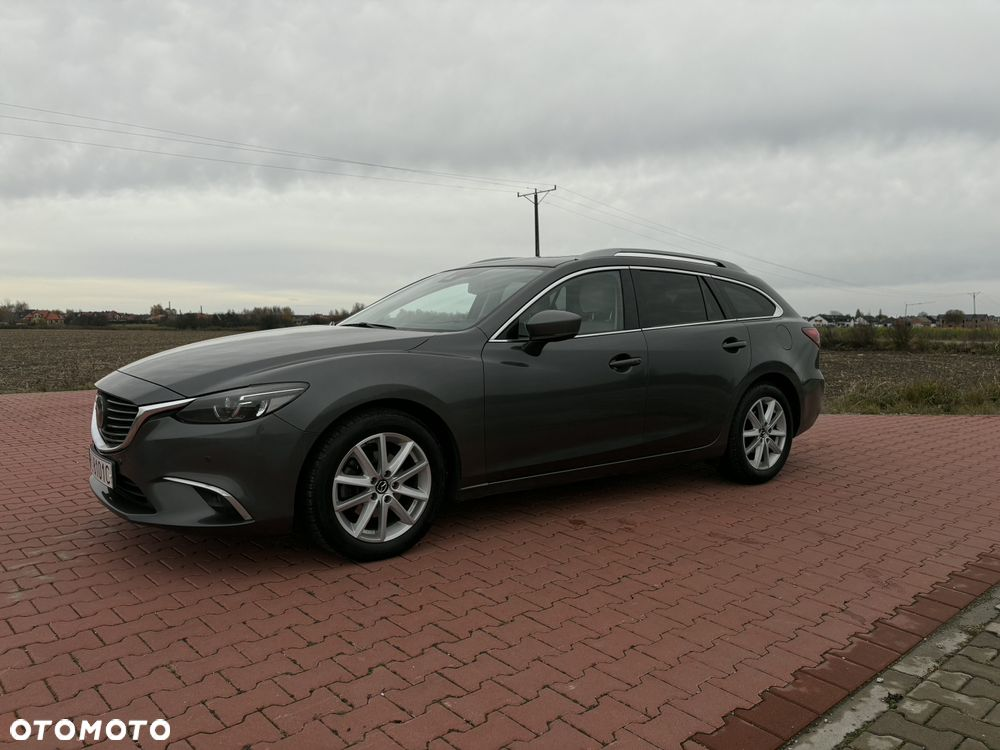
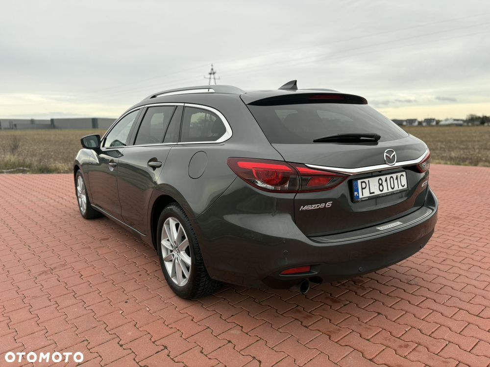
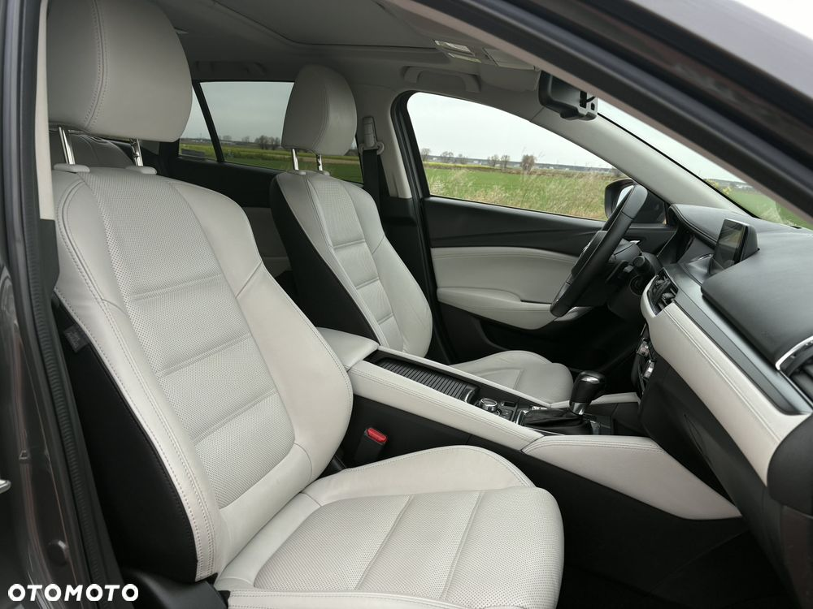
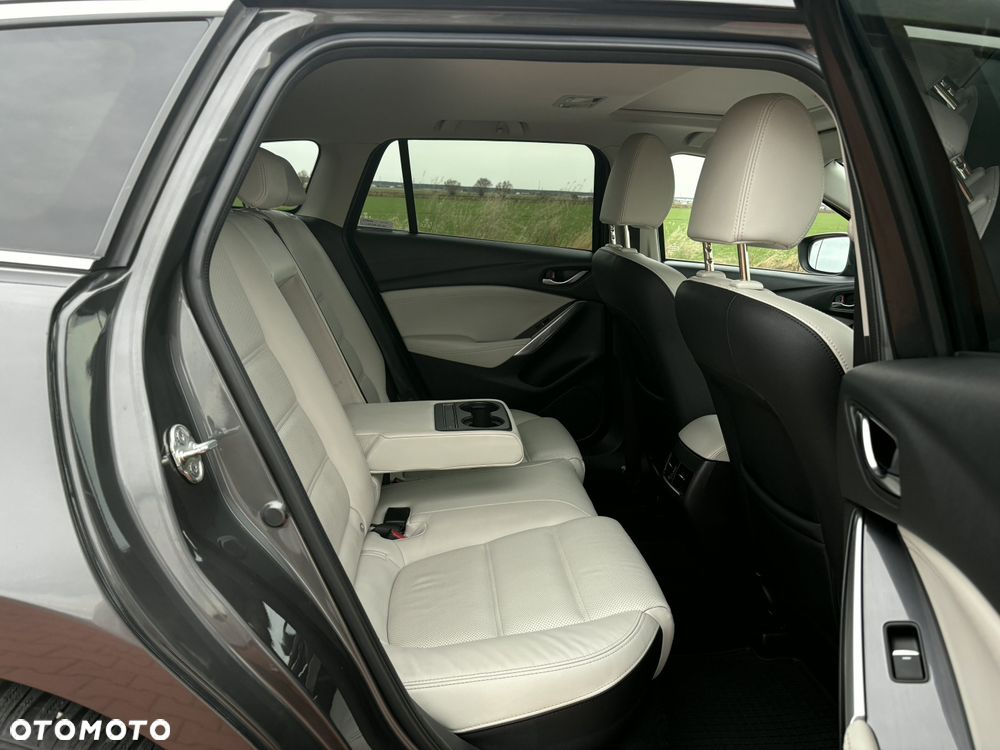
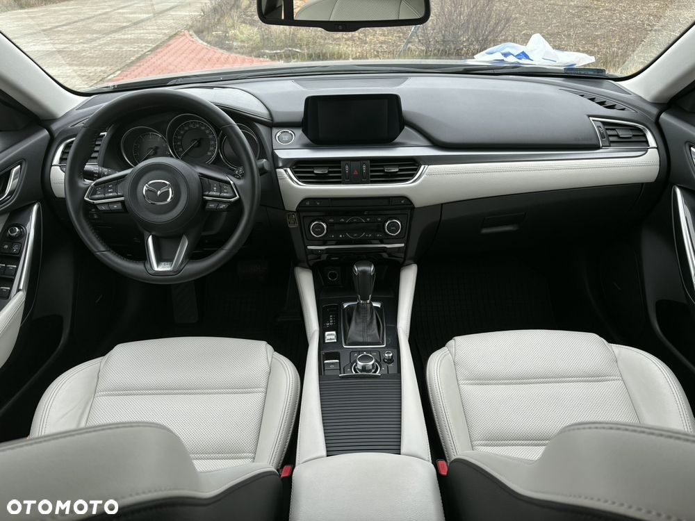
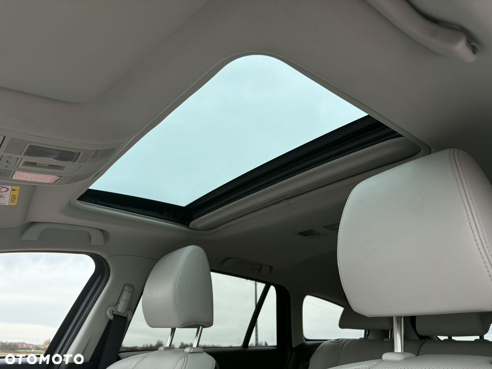
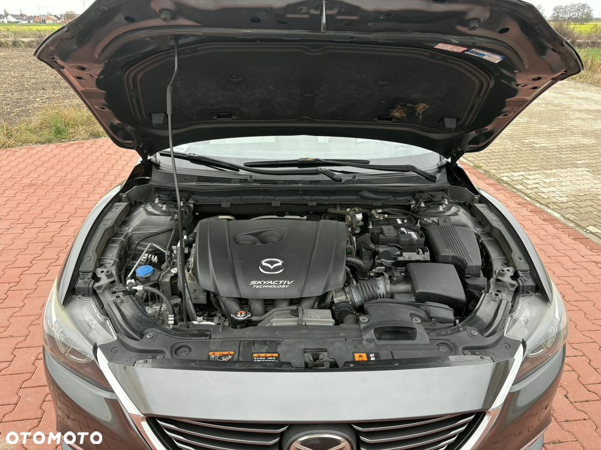
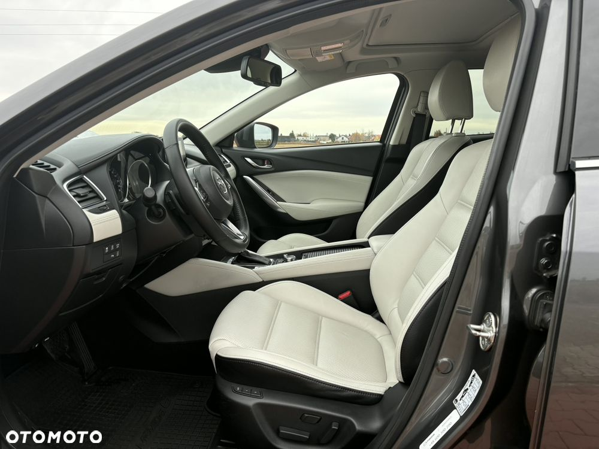
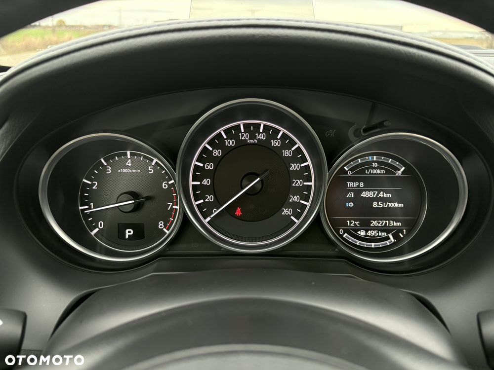
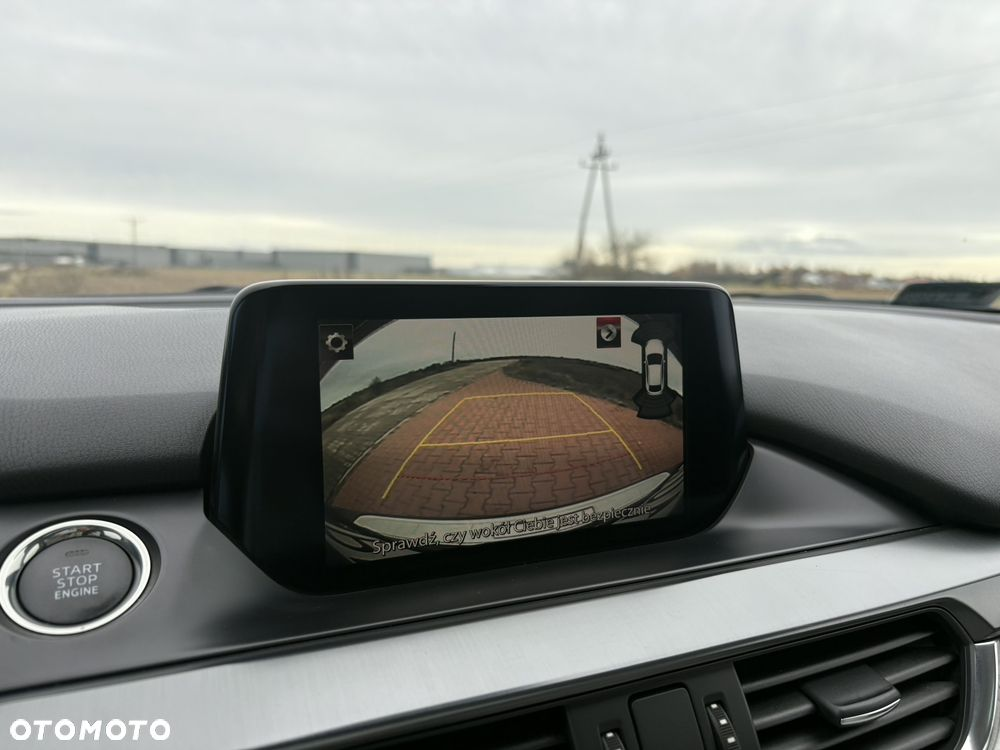
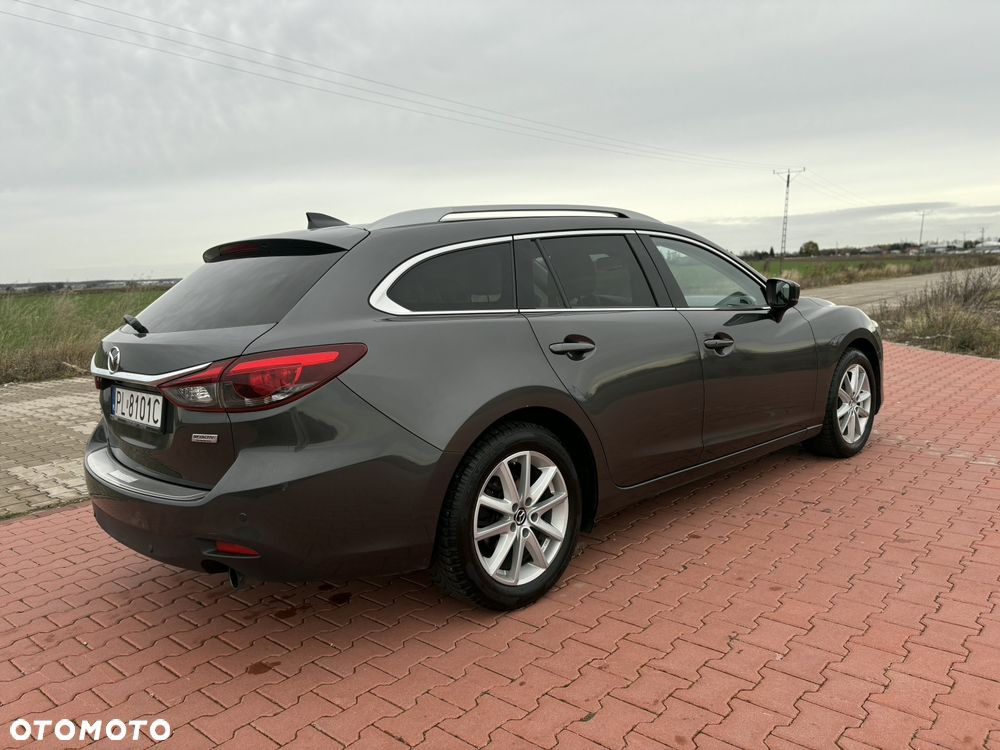